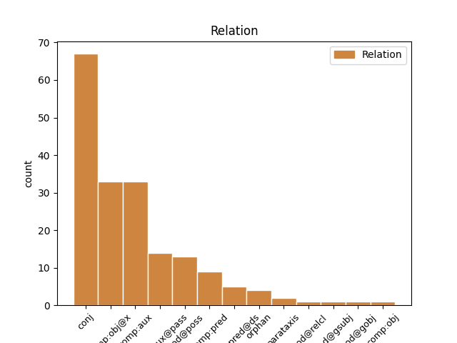
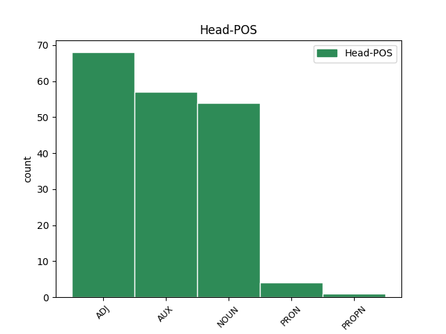
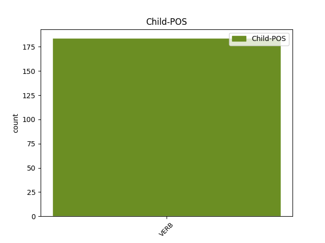

Distribution of features within this leaf



Agreement Rules sorted by frequency.
- When the dependent token is the conjunct(conj) of the head token, and the head token is ADJ and the dependent token is VERB.
1 Urakoitsijat _ _ _ _ 0 _ _ _
2 ovat _ _ _ _ 0 _ _ _
3 lähettäneet _ _ _ _ 0 _ _ _
4 laskun _ _ _ _ 0 _ _ _
5 olemattomasta olematon ADJ A Case=Ela|Degree=Pos|Number=Sing 0 _ _ _
6 tai _ _ _ _ 0 _ _ _
7 huolimattomasti _ _ _ _ 0 _ _ _
8 tehdystä tehdä VERB V Case=Ela|Degree=Pos|Number=Sing|PartForm=Past|VerbForm=Part|Voice=Pass 5 conj _ _
9 työstä _ _ _ _ 0 _ _ _
10 ja _ _ _ _ 0 _ _ _
11 vahinkotarkastajat _ _ _ _ 0 _ _ _
12 ovat _ _ _ _ 0 _ _ _
13 hyväksyneet _ _ _ _ 0 _ _ _
14 laskut _ _ _ _ 0 _ _ _
15 aiheettomasti _ _ _ _ 0 _ _ _
16 . _ _ _ _ 0 _ _ _
1 Kim _ _ _ _ 0 _ _ _
2 Jong _ _ _ _ 0 _ _ _
3 Il _ _ _ _ 0 _ _ _
4 ei _ _ _ _ 0 _ _ _
5 aiemmin _ _ _ _ 0 _ _ _
6 ollut olla AUX V Case=Nom|Degree=Pos|Number=Sing|PartForm=Past|VerbForm=Part|Voice=Act 0 _ _ _
7 tavannut tavata VERB V Case=Nom|Degree=Pos|Number=Sing|PartForm=Past|VerbForm=Part|Voice=Act 6 comp:aux _ _
8 ketään _ _ _ _ 0 _ _ _
9 korkea-arvoista _ _ _ _ 0 _ _ _
10 länsimaista _ _ _ _ 0 _ _ _
11 johtajaa _ _ _ _ 0 _ _ _
12 . _ _ _ _ 0 _ _ _
1 - _ _ _ _ 0 _ _ _
2 On _ _ _ _ 0 _ _ _
3 hienoa _ _ _ _ 0 _ _ _
4 , _ _ _ _ 0 _ _ _
5 että _ _ _ _ 0 _ _ _
6 Turun _ _ _ _ 0 _ _ _
7 kauppakamari _ _ _ _ 0 _ _ _
8 on _ _ _ _ 0 _ _ _
9 lähtenyt _ _ _ _ 0 _ _ _
10 mukaan _ _ _ _ 0 _ _ _
11 Turun _ _ _ _ 0 _ _ _
12 yliopiston _ _ _ _ 0 _ _ _
13 varainhankintakampanjaan _ _ _ _ 0 _ _ _
14 sekä _ _ _ _ 0 _ _ _
15 lahjoituksella lahjoitus NOUN N Case=Ade|Number=Sing 0 _ _ _
16 että _ _ _ _ 0 _ _ _
17 välittämällä välittää VERB V Case=Ade|InfForm=3|Number=Sing|VerbForm=Inf|Voice=Act 15 conj _ _
18 tietoa _ _ _ _ 0 _ _ _
19 jäsenyrityksilleen _ _ _ _ 0 _ _ _
20 , _ _ _ _ 0 _ _ _
21 Turun _ _ _ _ 0 _ _ _
22 yliopiston _ _ _ _ 0 _ _ _
23 vararehtori _ _ _ _ 0 _ _ _
24 Tapio _ _ _ _ 0 _ _ _
25 Reponen _ _ _ _ 0 _ _ _
26 sanoo _ _ _ _ 0 _ _ _
27 . _ _ _ _ 0 _ _ _
1 Posti _ _ _ _ 0 _ _ _
2 tiesi _ _ _ _ 0 _ _ _
3 kuvauksesta _ _ _ _ 0 _ _ _
4 , _ _ _ _ 0 _ _ _
5 mutta _ _ _ _ 0 _ _ _
6 poliisia _ _ _ _ 0 _ _ _
7 ei _ _ _ _ 0 _ _ _
8 oltu olla AUX V Case=Nom|Degree=Pos|Number=Sing|PartForm=Past|VerbForm=Part|Voice=Pass 0 _ _ _
9 informoitu informoida VERB V Case=Nom|Degree=Pos|Number=Sing|PartForm=Past|VerbForm=Part|Voice=Pass 8 comp:aux@pass _ _
10 asiasta _ _ _ _ 0 _ _ _
11 . _ _ _ _ 0 _ _ _
1 Nykyisin _ _ _ _ 0 _ _ _
2 kuningasgambiitti _ _ _ _ 0 _ _ _
3 ei _ _ _ _ 0 _ _ _
4 ole _ _ _ _ 0 _ _ _
5 enää _ _ _ _ 0 _ _ _
6 suurmestarien _ _ _ _ 0 _ _ _
7 suosiossa _ _ _ _ 0 _ _ _
8 , _ _ _ _ 0 _ _ _
9 sillä _ _ _ _ 0 _ _ _
10 mustan _ _ _ _ 0 _ _ _
11 on _ _ _ _ 0 _ _ _
12 todettu _ _ _ _ 0 _ _ _
13 voivan voida AUX V Case=Gen|Degree=Pos|Number=Sing|PartForm=Pres|VerbForm=Part|Voice=Act 0 _ _ _
14 pitää _ _ _ _ 0 _ _ _
15 kiinni _ _ _ _ 0 _ _ _
16 sotilaastaan _ _ _ _ 0 _ _ _
17 ja _ _ _ _ 0 _ _ _
18 puolustautuvan puolustautua VERB V Case=Gen|Degree=Pos|Number=Sing|PartForm=Pres|VerbForm=Part|Voice=Act 13 conj _ _
19 tarpeeksi _ _ _ _ 0 _ _ _
20 hyvin _ _ _ _ 0 _ _ _
21 . _ _ _ _ 0 _ _ _
1 3. _ _ _ _ 0 _ _ _
2 Valtio-opin _ _ _ _ 0 _ _ _
3 korvaava _ _ _ _ 0 _ _ _
4 opetusseminaari _ _ _ _ 0 _ _ _
5 : _ _ _ _ 0 _ _ _
6 Kurssilla _ _ _ _ 0 _ _ _
7 sovittava _ _ _ _ 0 _ _ _
8 määrä _ _ _ _ 0 _ _ _
9 tapaamisia _ _ _ _ 0 _ _ _
10 , _ _ _ _ 0 _ _ _
11 yhteensä _ _ _ _ 0 _ _ _
12 noin _ _ _ _ 0 _ _ _
13 20 _ _ _ _ 0 _ _ _
14 tuntia _ _ _ _ 0 _ _ _
15 , _ _ _ _ 0 _ _ _
16 sekä _ _ _ _ 0 _ _ _
17 kurssin _ _ _ _ 0 _ _ _
18 aikana _ _ _ _ 0 _ _ _
19 tehtävä _ _ _ _ 0 _ _ _
20 10-20 _ _ _ _ 0 _ _ _
21 sivun _ _ _ _ 0 _ _ _
22 mittainen _ _ _ _ 0 _ _ _
23 harjoitustyö harjoitus#työ NOUN N Case=Nom|Number=Sing 0 _ _ _
24 , _ _ _ _ 0 _ _ _
25 johon _ _ _ _ 0 _ _ _
26 hankittava hankkia VERB V Case=Nom|Degree=Pos|Number=Sing|PartForm=Pres|VerbForm=Part|Voice=Pass 23 mod@relcl _ _
27 tutkimusmateriaali _ _ _ _ 0 _ _ _
28 ja _ _ _ _ 0 _ _ _
29 taustakirjallisuutta _ _ _ _ 0 _ _ _
30 . _ _ _ _ 0 _ _ _
1 Harvat harva PRON Pron Case=Nom|Number=Plur|PronType=Ind 0 _ _ _
2 ja _ _ _ _ 0 _ _ _
3 valitut valita VERB V Case=Nom|Degree=Pos|Number=Plur|PartForm=Past|VerbForm=Part|Voice=Pass 1 conj _ _
4 kuuluvat _ _ _ _ 0 _ _ _
5 kolmen _ _ _ _ 0 _ _ _
6 A:n _ _ _ _ 0 _ _ _
7 kerhoon _ _ _ _ 0 _ _ _
1 Siimes Siimes PROPN N Case=Nom|Number=Sing 0 _ _ _
2 : _ _ _ _ 0 _ _ _
3 Lääkevalvonta _ _ _ _ 0 _ _ _
4 ja _ _ _ _ 0 _ _ _
5 -hallinto _ _ _ _ 0 _ _ _
6 keskitettävä keskittää VERB V Case=Nom|Degree=Pos|Number=Sing|PartForm=Pres|VerbForm=Part|Voice=Pass 1 parataxis _ _
7 Kuopioon _ _ _ _ 0 _ _ _
1 Turvallisuusasiantuntija _ _ _ _ 0 _ _ _
2 Totti _ _ _ _ 0 _ _ _
3 Karpela _ _ _ _ 0 _ _ _
4 hämmästyi _ _ _ _ 0 _ _ _
5 sieppaamisesta _ _ _ _ 0 _ _ _
6 epäillyn epäillä VERB V Case=Gen|Degree=Pos|Number=Sing|PartForm=Past|VerbForm=Part|Voice=Pass 7 mod@poss _ _
7 nimen nimi NOUN N Case=Gen|Number=Sing 0 _ _ _
8 ja _ _ _ _ 0 _ _ _
9 kuvan _ _ _ _ 0 _ _ _
10 tuomisesta _ _ _ _ 0 _ _ _
11 julkisuuteen _ _ _ _ 0 _ _ _
12 . _ _ _ _ 0 _ _ _
Disagree Examples:
1 Hei _ _ _ _ 0 _ _ _
2 , _ _ _ _ 0 _ _ _
3 millainen _ _ _ _ 0 _ _ _
4 muotibloggaaja _ _ _ _ 0 _ _ _
5 ottaa _ _ _ _ 0 _ _ _
6 viisi _ _ _ _ 0 _ _ _
7 asukuvaa _ _ _ _ 0 _ _ _
8 , _ _ _ _ 0 _ _ _
9 joissa _ _ _ _ 0 _ _ _
10 ei _ _ _ _ 0 _ _ _
11 näy _ _ _ _ 0 _ _ _
12 kuvattavan kuvata VERB V Case=Gen|Degree=Pos|Number=Sing|PartForm=Pres|VerbForm=Part|Voice=Pass 13 mod@poss _ _
13 päätä pää NOUN N Case=Par|Number=Sing 0 _ _ _
14 eikä _ _ _ _ 0 _ _ _
15 jalkoja _ _ _ _ 0 _ _ _
16 ? _ _ _ _ 0 _ _ _
1 Joulureissuista _ _ _ _ 0 _ _ _
2 palanneiden palata VERB V Case=Gen|Degree=Pos|Number=Plur|PartForm=Past|VerbForm=Part|Voice=Act 3 mod@poss _ _
3 kassit kassi NOUN N Case=Nom|Number=Plur 0 _ _ _
4 tursuavat _ _ _ _ 0 _ _ _
5 pestäviä _ _ _ _ 0 _ _ _
6 vaatteita _ _ _ _ 0 _ _ _
7 ja _ _ _ _ 0 _ _ _
8 niin _ _ _ _ 0 _ _ _
9 edelleen _ _ _ _ 0 _ _ _
10 . _ _ _ _ 0 _ _ _
1 Tuo _ _ _ _ 0 _ _ _
2 videokin _ _ _ _ 0 _ _ _
3 on _ _ _ _ 0 _ _ _
4 ollut olla AUX V Case=Nom|Degree=Pos|Number=Sing|PartForm=Past|VerbForm=Part|Voice=Act 0 _ _ _
5 nähtävillä nähdä VERB V Case=Ade|Degree=Pos|Number=Plur|PartForm=Pres|VerbForm=Part|Voice=Pass 4 comp:aux@pass _ _
6 Youtubessa _ _ _ _ 0 _ _ _
7 jo _ _ _ _ 0 _ _ _
8 useamman _ _ _ _ 0 _ _ _
9 päivän _ _ _ _ 0 _ _ _
10 , _ _ _ _ 0 _ _ _
11 ja _ _ _ _ 0 _ _ _
12 jos _ _ _ _ 0 _ _ _
13 minua _ _ _ _ 0 _ _ _
14 olisi _ _ _ _ 0 _ _ _
15 seurannut _ _ _ _ 0 _ _ _
16 GitHubissa _ _ _ _ 0 _ _ _
17 tai _ _ _ _ 0 _ _ _
18 Twitterissä _ _ _ _ 0 _ _ _
19 ( _ _ _ _ 0 _ _ _
20 tai _ _ _ _ 0 _ _ _
21 youtubessa _ _ _ _ 0 _ _ _
22 ) _ _ _ _ 0 _ _ _
23 , _ _ _ _ 0 _ _ _
24 niin _ _ _ _ 0 _ _ _
25 sen _ _ _ _ 0 _ _ _
26 olisi _ _ _ _ 0 _ _ _
27 saattanut _ _ _ _ 0 _ _ _
28 bongata _ _ _ _ 0 _ _ _
29 aikaisemmin _ _ _ _ 0 _ _ _
30 . _ _ _ _ 0 _ _ _
1 Jos _ _ _ _ 0 _ _ _
2 joku _ _ _ _ 0 _ _ _
3 sana _ _ _ _ 0 _ _ _
4 pistää _ _ _ _ 0 _ _ _
5 silmään _ _ _ _ 0 _ _ _
6 , _ _ _ _ 0 _ _ _
7 löydätte _ _ _ _ 0 _ _ _
8 selkeän _ _ _ _ 0 _ _ _
9 kirjoitusvirheen kirjoitus#virhe NOUN N Case=Gen|Number=Sing 0 _ _ _
10 tai _ _ _ _ 0 _ _ _
11 muuta _ _ _ _ 0 _ _ _
12 huomautettavaa huomauttaa VERB V Case=Par|Degree=Pos|Number=Sing|PartForm=Pres|VerbForm=Part|Voice=Pass 9 conj _ SpaceAfter=No
13 , _ _ _ _ 0 _ _ _
14 ilmoittakaa _ _ _ _ 0 _ _ _
15 ihmeessä _ _ _ _ 0 _ _ _
16 vaikka _ _ _ _ 0 _ _ _
17 tämän _ _ _ _ 0 _ _ _
18 tekstin _ _ _ _ 0 _ _ _
19 perään _ _ _ _ 0 _ _ _
20 tai _ _ _ _ 0 _ _ _
21 suoraan _ _ _ _ 0 _ _ _
22 sähköpostilla _ _ _ _ 0 _ _ _
23 ( _ _ _ _ 0 _ _ _
24 palautelomakekin _ _ _ _ 0 _ _ _
25 käy _ _ _ _ 0 _ _ _
26 ) _ _ _ _ 0 _ _ _
27 . _ _ _ _ 0 _ _ _
1 Kuinka _ _ _ _ 0 _ _ _
2 paljon _ _ _ _ 0 _ _ _
3 ihmiset _ _ _ _ 0 _ _ _
4 oikeasti _ _ _ _ 0 _ _ _
5 sitten _ _ _ _ 0 _ _ _
6 olisivat _ _ _ _ 0 _ _ _
7 valmiita valmis ADJ A Case=Par|Degree=Pos|Number=Plur 0 _ _ _
8 maksamaan maksaa VERB V Case=Ill|InfForm=3|Number=Sing|VerbForm=Inf|Voice=Act 7 comp:obj@x _ _
9 tästä _ _ _ _ 0 _ _ _
10 huvista _ _ _ _ 0 _ _ _
11 ? _ _ _ _ 0 _ _ _